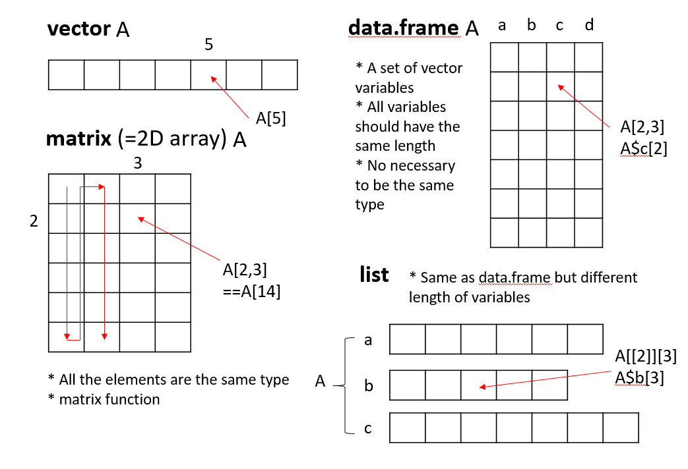

Chapter 5 Data transformation basics
일반적인 데이터 분석은 데이터 전처리(변환), 가시화, 모델링(통계분석)의 반복적인 수행으로 진행될 수 있습니다.

R에서는 data.frame 형식의 데이터 타입이 주로 사용되며 (최근 tibble형식도 많이 사용됨) 따라서 data.frame 기반의 데이터를 다루기 위한 다양한 함수를 익힐 필요가 있습니다. 앞서 설명한 ggplot2 패키지는 가시화에 사용되는 대표적인 패키지이고 본 장에서는 data.frame 데이터의 전처리나 변환을 위한 함수들을 배워보겠습니다. 먼저 builtin 함수들을 중심으로 설명을 진행하고 이 후에 6장에서 dplyr 패키지에 대한 내용을 다루겠습니다. 앞서 배웠던 데이터를 저장하는 object의 종류를 먼저 간략히 정리해 봅니다.
5.1 Data structures in R
5.1.1 Vectors
같은 타입의 데이터를 (Numeric, character, factor, …) 저장한 오브젝트 타입으로 인덱스는 [, ] 사용합니다.
5.1.2 Lists
list 변수 타입은 vector 형태의 여러개의 element를 가질 수 있으며 각 element의 데이터는 문자나 숫자 어떤 데이터 타입도 가능하며 각 element vector의 길이가 모두 달라도 됩니다. list의 인덱싱에서 [ ]는 리스트를 반환하고 [[ ]]는 vector element들을 반환합니다.
5.1.3 Matrices
같은 타입의 데이터로 채워진 2차원 행렬이며 인덱스는 [i, j] 형태로 i는 row, j는 column 을 가리킵니다. 메트릭스의 생성은 matrix 명령어를 사용하며 왼쪽부터 column 값을 모두 채우고 다음 컬럼 값을 채워 나가는 것이 기본 설정이며 byrow=T 를 통해 row를 먼저 채울수도 있습니다. row와 column 이름은 rownames와 colnames로 설정이 가능하며 rbind와 cbind로 두 행렬 또는 행렬과 백터를 연결할 수 있습니다 ( rbind와 cbind의 경우 행렬이 커지면 컴퓨터 리소스 많이 사용함).
5.1.4 data.frame
data frame은 변수들의 집합으로 list형과 비슷하지만 각 변수 element들이 똑같은 길이를 가지고 matrix 형태로 표현되는 것이 다릅니다. 즉, 각 row는 샘플을 나타내고 각 column은 변수를 나타내며 각 변수들이 갖는 샘플의 개수 (row의 길이, vector 의 길이)는 같아야 합니다. 컬럼 한 줄이 하나의 변수 이므로 새로운 변수도 컬럼 형태로 붙여 넣을 수 있습니다. 변수들의 이름을 이용하여 $ 기호로 각 변수들의 데이터에 접근 할 수 있고 matrix와 같이 [i,j] 형태의 인덱싱도 가능합니다. R 기반의 데이터 분석에서는 가장 선호되는 데이터 타입이라고 볼 수 있습니다.
ids <- 1:10
ids
idnames <- paste("Name", ids, sep="")
idnames
students <- data.frame(ids, idnames)
students
class(students$ids)
class(students$idnames)
students$idnames
str(students)
students <- data.frame(ids, idnames, stringsAsFactors = F)
class(students$idnames)
students$idnames
students[1,]
str(students)
5.2 subset and filter
R에서 데이터 저장은 data.frame이나 matrix 타입을 일반적으로 사용합니다. 이 데이터의 일부 열 또는 행의 데이터만을 가져와서 별도로 저장하거나 분석이 필요할 경우가 있습니다. 이 때 인덱싱을 사용해서 일부 데이터를 선택하고 사용할 수 있으며 subset과 filter 함수도 이러한 선별 기능을 제공합니다. subset은 행과 열 모두를 선별할 수 있는 함수이고 filter는 열 (샘플)을 선택하는 함수입니다. 다음 airquality 데이터는 1973년 날짜별로 뉴욕의 공기질을 측정한 데이터 입니다. NA를 제외한 나머지 데이터만으로 새로운 데이터셋을 만들어 봅시다. is.na함수를 사용하면 해당 데이터가 NA일 경우 TRUE, NA가 아닐 경우 FALSE 를 반환해 줍니다.
is.na(airquality$Ozone)
ozone_complete1 <- airquality[!is.na(airquality$Ozone),]
ozone_complete2 <- filter(airquality, !is.na(airquality$Ozone))
ozone_complete3 <- subset(airquality, !is.na(Ozone))위 ozone_complete1와 ozone_complete2, ozone_complete3는 같은 결과를 보입니다. 그러나 ozone_complete1, 2보다는 ozone_complete3 코드가 훨씬 직관적이고 가독성이 높습니다. 특히 airquality$ozone 로 $를 사용하여 변수에 접근한 반면 subset 함수는 Ozone이라는 변수 이름을 사용해서 접근함으로써 코드의 간결성과 가독성을 유지할 수 있습니다. 또한 subset의 select 옵션을 이용해서 변수를 선택할 수도 있으며 &(AND)와 |(OR) 연산자를 사용해서 조건을 두 개 이상 설정할 수 있습니다. 아래 select 옵션에서 -는 해당 변수를 제외한다는 의미 입니다.
5.3 merging and split
merge 함수는 두 개 이상의 데이터셋을 통합하는 기능을 수행하는 함수입니다. 특히 rbind나 cbind와는 다르게, 결합하는 두 데이터에 공통적이거나 한 쪽의 데이터를 기준으로 결합을 수행 합니다. ?merge를 참고하면 by, by.x, by.y, all, all.x, all.y 등의 옵션으로 이러한 설정을 수행할 수 있습니다. 간단한 예제를 통해서 이해해 보겠습니다.
10명의 사람이 있고 이 사람들의 나이와 성별을 각각 나타낸 두 데이터셋이 있습니다. 그런데 df1은 나이만을 df2는 성별 정보만을 가지고 있으며 두 정보 모두 제공된 사람은 3명 (인덱스 4,5,6) 뿐입니다. 이제 merge를 이용해서 두 데이터셋을 결합해 보겠습니다.
## merge
df1 <- data.frame(id=c(1,2,3,4,5,6), age=c(30, 41, 33, 56, 20, 17))
df2 <- data.frame(id=c(4,5,6,7,8,9), gender=c("f", "f", "m", "m", "f", "m"))
df_inner <- merge(df1, df2, by="id", all=F)
df_outer <- merge(df1, df2, by="id", all=T)
df_left_outer <- merge(df1, df2, by="id", all.x=T)
df_right_outer <- merge(df1, df2, by="id", all.y=T)만약 두 데이터셋의 id가 다를 경우나 각각 다른 기준으로 결합해야 하는 경우는 by대신 by.x, by.y 옵션을 사용할 수 있습니다.
split 함수는 데이터를 특정 기준으로 나누는 역할을 하며 해당 기준은 factor 형 벡터 형태로 주어질 수 있습니다. 예를 들어 airquality 데이터의 month 변수를 기준으로 데이터를 분리해 보겠습니다.
str(airquality)
g <- factor(airquality$Month)
airq_split <- split(airquality, g)
class(airq_split)
str(airq_split)위와 같이 airq_split은 길이가 5인 (5, 6, 7, 8, 9월) list타입이 되었고 각 요소는 서로 다른 size의 data.frame형으로 구성 된 것을 확인할 수 있습니다.
5.4 transforming data
R에서 기존 가지고 있는 데이터의 변경은 새로운 변수의 추가, 삭제, 변형과 샘플의 추가, 삭제, 변형을 생각해 볼 수 있습니다. 이러한 기능은 앞에서 배운 merge, split이나 rbind, cbind, 그리고 인덱싱을 활용한 값 변경 등의 방법을 이용할 수 있습니다. 또한 가장 직관적으로 필요한 변수들을 기존 데이터셋에서 추출한 후 data.frame 명령어를 사용해서 새로운 데이터셋으로 만들어주면 될 것 입니다.
이러한 방법들 외에 within을 사용할 경우 특정 변수의 변형과 이를 반영한 새로운 데이터셋을 어렵지 않게 만들수 있습니다. with 함수의 사용 예와 함께 within 함수를 사용하여 데이터를 변형하는 예를 살펴봅니다. with나 within 함수는 R을 활용하는데 많이 사용되는 함수들은 아닙니다. 또한 이러한 기능들은 dplyr 등의 패키지에서 제공하는 경우가 많아서 필수적으로 익힐 부분은 아닙니다. 그러나 개념적인 이해를 돕기위한 좋은 도구들이며 여전히 고수준의 R 사용자들이 코드에 사용하고 있는 함수들이므로 알아두는 것이 좋습니다.
## without with
ozone_complete <- airquality[!is.na(airquality$Ozone),"Ozone"]
temp_complete <- airquality[!is.na(airquality$Temp),"Temp"]
print(mean(ozone_complete))
print(mean(temp_complete))
## with
with(airquality, {
print(mean(Ozone[!is.na(Ozone)]))
print(mean(Temp[!is.na(Temp)]))
})위 with 함수에서 보는바와 같이 $를 이용한 변수 접근 대신 with함수 내에서는 ({, } 안에서) 해당 data.frame에 있는 변수 이름을 직접 접근할 수 있으며 따라서 코드의 간결함과 가독성이 향상됩니다.
within 함수는 with함수와 같이 {, } 안에서 변수의 이름만으로 해당 변수에 접근이 가능하나 입력된 데이터와 변경된 변수(들)을 반환한다는 점이 다릅니다. 아래 예는 airquality 데이터의 화씨 (Fahrenheit) 온도를 섭씨 (Celsius) 온도로 변환해서 새로운 데이터셋을 만드는 코드입니다. data.frame을 이용한 코드와 비교해 보시기 바랍니다. 데이터셋 내에서 참조할 변수들이 많아질 경우 airquality$xxx 식의 코드를 줄이는 것 만으로도 코드의 가독성과 간결성을 유지할 수 있습니다.
5.5 Analysis example (babies)
UsingR 패키지의 babies 데이터를 이용해서 산모의 흡연 여부와 신생아 몸무게의 관계를 알아보는 분석을 수행해 보겠습니다. 본 강의를 통해 배우지 않은 내용들이 있지만 코드를 따라 가면서 참고하시기 바랍니다. 우선 UsingR 패키지를 로딩합니다. 산모의 임신 기간이 (gestation) 999로 표기된 데이터는 명백히 에러이며 이들을 NA로 처리합니다.
library(UsingR)
library(ggplot2)
head(babies)
## a simple way to checkout the data
plot(babies$gestation)
## or using ggplot...
ggplot(babies, aes(x=1:length(gestation), y=gestation)) +
geom_point()
babies$gestation[babies$gestation>900] <- NA
str(babies)아래와 같이 within 함수를 사용해서 babies$ 를 반복해서 입력해주는 불편함을 줄이고 가독성을 높입니다. 똑같은 방법으로 dwt (아빠의 몸무게) 변수의 에러값들에 대해서도 NA 처리를 할 수 있습니다.
new_babies <- within(babies, {
gestation[gestation==999] <- NA
dwt[dwt==999] <- NA
})
str(new_babies)smoke 변수는 흡연 여부를 나타내는 범주형 변수로 0, 1, 2, 3 값은 의미가 없습니다. 사람이 읽을 수 있는 label을 붙인 factor 형 변수로 변환하는 코드도 함께 작성해 보겠습니다.
5.6 apply
앞서까지는 데이터를 변형할 때 사용하는 다양한 함수들을 살펴 보았습니다. apply는 데이터를 변형하기 위한 함수라기 보다는 데이터를 다룰 때 각 원소별, 그룹별, row, 또는 column 별로 반복적으로 수행되는 작업을 효율적으로 수행할 수 있도록 해주는 함수입니다. apply 계열의 함수를 적절히 사용하면 효율성이나 편리성 뿐만 아니라 코드의 간결성 등 많은 장점이 있습니다. 쉬운 이해를 위해 colMean 함수를 예로 들면 colMean은 column 또는 row 단위로 해당하는 모든 값들에 대해 평균을 계산해주는 함수이고 apply를 사용할 경우 다음과 같이 apply 함수와 mean 함수를 이용해서 같은 기능을 수행할 수 있습니다. 아래는 babies 데이터의 clearning 된 (위에서 만들었던) new_babies 데이터에 이어서 수행되는 내용입니다.
head(new_babies)
df <- subset(new_babies, select=c(gestation, wt, dwt))
colMeans(df, na.rm=T)
apply(df, 2, mean, na.rm=T)위와 같이 colMeans와 apply가 똑같은 결과를 보여주고 있습니다. 두 번째 인자인 margin의 값으로 (?apply참고) 여기서는 2가 사용되었으며 margin 값이 1인지 2인지에 따라서 다음과 같이 작동을 합니다.

mean외에도 다양한 함수들이 사용될 수 있으며 아래와 같이 임의의 함수를 만들어서 사용할 수 도 있습니다. 아래 코드에서는 function(x)...로 바로 함수의 정의를 넣어서 사용했으나 그 아래 mysd 함수와 같이 미리 함수 하나를 만들고 난 후 함수 이름을 이용해서 apply를 적용할 수 있습니다.
apply 함수는 특히 R에서 느리게 작동하는 loop (for, while 등) 문 대신 사용되어 큰 행렬에 대해서도 빠른 계산 속도를 보여줄 수 있습니다.
n <- 40
m <- matrix(sample(1:100, n, replace=T), ncol=4)
mysd <- function(x){
xmean <- sum(x)/length(x)
tmpdif <- x-xmean
xvar <- sum(tmpdif^2)/(length(x)-1)
xsd <- sqrt(xvar)
return(xsd)
}
## for
results <- rep(0, nrow(m))
for(i in 1:nrow(m)){
results[i] <- mysd(m[i,])
}
print(results)
apply(m, 1, mysd)
apply(m, 1, sd)apply 함수 외에도 sapply, lapply, mapply 등의 다양한 apply계열 함수가 쓰일 수 있습니다. 먼저 lapply는 matrix 형태 데이터가 아닌 list 데이터에 사용되어 각 list 원소별로 주어진 기능을 반복해서 수행하며 sapply는 lapply와 유사하나 벡터, 리스트, 데이터프레임 등에 함수를 적용할 수 있고 그 결과를 벡터 또는 행렬로 반환합니다.
x <- list(a=1:10, b=exp(-3:3), logic=c(T,T,F,T))
mean(x$a)
lapply(x, mean)
sapply(x, mean)
x <- data.frame(a=1:10, b=exp(-4:5))
sapply(x, mean)
x <- c(4, 9, 16)
sapply(x, sqrt)
sqrt(x)
y <- c(1:10)
sapply(y, function(x){2*x})
y*2마지막 예제에서처럼 sapply나 lapply도 임의의 함수를 만들어 적용시킬 수도 있습니다. 자세히 살펴 보면 y는 10개의 값을 갖는 벡터이고 이 벡터의 각 원소 (값에) 함수를 반복해서 적용하는 것 입니다. 함수에서 x는 각 원소의 값을 차례차례 받는 역할을 하므로 1부터 10까지 값이 함수로 들어가 2를 곱한 수가 반환됩니다. 따라서 벡터연산을 하는 y*2와 결과가 같으나 원하는 함수를 정의해서 자유롭게 사용할 수 있다는 장점이 있습니다. 리스트의 경우는 다음과 같이 사용합니다.
y <- list(a=1:10, b=exp(-3:3), logic=c(T,T,F,T))
myfunc <- function(x){
return(mean(x, na.rm=T))
}
lapply(y, myfunc)
unlist(lapply(y, myfunc))즉, myfunc의 x가 list y의 각 원소들, y[[1]], y[[2]], y[[3]]를 각각 받아서 mean 연산을 수행해 줍니다. 결과로 각 list 원소들의 평균 값이 반환되며 unlist 함수는 list 형태의 반환 값을 vector 형태로 전환해 줍니다.
5.7 Problems 05
1-1) airquality 데이터에서 Temp와 Ozone 변수로 이루어진 df라는 이름의 data.frame을 만드시오 (단 NA가 있는 샘플(열)은 모두 제외)
2-1) 다음 df 의 hour, minute, second로 나누어진 값들을 초 단위로 변환하여 seconds라는 변수에 저장한 후 기존 df에 추가한 df2 데이터셋을 만드시오 (within 함수 이용)
다음은 앞에서 수행했던 airquality 데이터를 월별로 나눈 데이터셋임. 이 데이터셋을 이용하여 각 월별로 온도와 오존 농도의 평균값을 저장한 data.frame 형식의 데이터를 만들기 위하여 다음 단계별 과정에 적절한 코드를 작성하시오
3-1) 다음 df의 ozone 평균을 구하는 ozone_func 함수를 작성하시오 (단 입력은 data.frame 형식의 오브젝트를 받고 출력은 평균값 (정수 값 하나) 출력. mean 함수 사용시 데이터에 NA가 포함되어 있을 경우 na.rm=T 옵션 적용)
## May data.frame
df <- airq_split[[1]]
#
# write your code here for ozone_func function
#
## Usage
ozone_func(df)
## output
# 23.615383-2) lapply와 ozone_func 함수를 사용하여 airq_split list 데이터의 월별 ozone 평균 값을 구하고 ozone_means에 vector 형식으로 저장하시오
3-3) 위 3-1), 3-2)와 같은 방법으로 temp_func 함수를 만들고 월별 temp의 평균값을 temp_means에 vector 형식으로 저장하시오.
3-4) 위에서 구해진 두 변수값들을 이용하여 air_means 라는 이름의 data.frame으로 저장하시오

이 저작물은 크리에이티브 커먼즈 저작자표시-비영리-변경금지 4.0 국제 라이선스에 따라 이용할 수 있습니다.